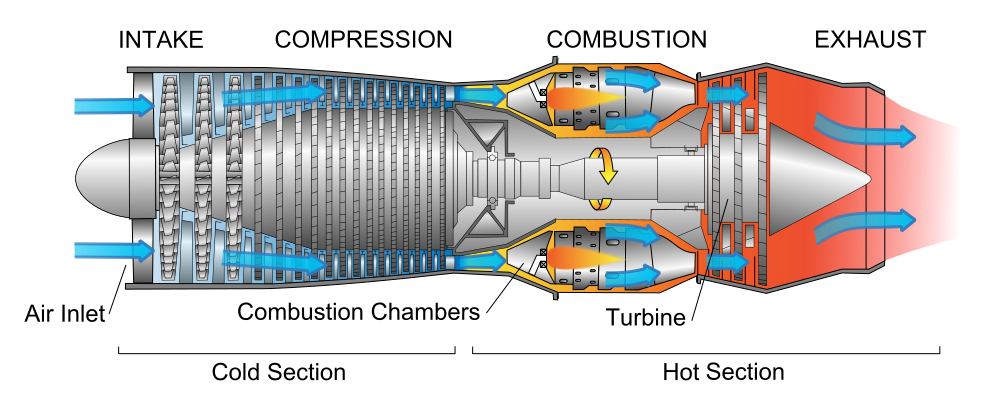

48TH FT SQ
|

 |
|
|
POWER PLANT |
Jet engine axial compressor. By NASA [Public domain], via Wikimedia Commons |
CREW CHECK LIST
Jet Engine BEFORE ENGINE START
1. Master FUEL Switch ON
2. MAIN PWR BTN CLICK
3. MAIN PWR LIGHT ON
STARTING ENGINE
1. ENG SWITCH ON
2. Throttle ADVANCE TO IDLE 15%
3. Engine Instruments Check
ENGINE SHUTDOWN
1. Throttle IDLE
2. ENG SWITCH OFF
|

|
ENG SWITCH
|

|
Jet engine" by Jeff Dahl - self-made, vector version of en:Image:FAA-8083-3A Fig 14-1.PNG which comes from an FAA handbook. Licensed under GFDL via Wikimedia Commons |